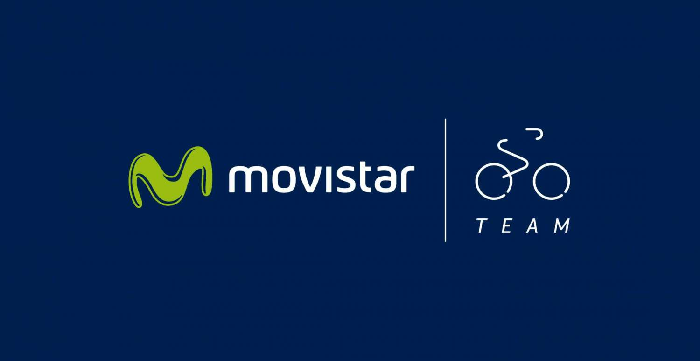

Mejores equipos del mundo

Movistar Team se convierte en el primer equipo profesional de la historia del ciclismo en ganar 15 grandes vueltas. 7 tours, 4 vueltas y 4 giros jalonan la trayectoria de unas estructura que empezó a ganar cosas muy grandes allá por 1988.¿Pero le convierte esto en el mejor equipo de la historia?
No es que sea una pregunta difícil, es una sin respuesta. El equipo que ha brillado en el Mortirolo, ¿tiene algo que ver con el de Perico Delgado a finales de los 80? Algo difícil de creer si tenemos en cuenta que del triunfo de Quintana en el Giro, hace ahora solo 5 años, solo ha repetido Andrey Amador.
¿Vale decir que el Reynolds es el Movistar? ¿En qué momento un equipo deja de ser uno para convertirse en otro?¿Basta con conservar el mismo director o hay que ceñirse a los datos fiscales de la empresa? Y éste es solo uno de los interrogantes porque… ¿es mejor el equipo que más grandes vueltas gana o el que triunfa en las clásicas? ¿Es mejor el que más ha ganado o el que ha ganado más en menos tiempo? A pesar del evidente éxito del Movistar, muchos consideran a Sky y Deceunink como los mejores del mundo ahora mismo. Y luego está lo de comparar épocas, algo totalmente impracticable…
Movistar Team
La estrucutura de Eusebio Unzúe empezó a ganar tours con Perico y lo petó con Indurain. Pereiro, Valverde, Olano y en los últimos años Quintana y Carapaz han sumado gestas a la casa hasta sumar los 15 entorchados, récord histórico del ciclismo.
Peugeot
Los franceses corrieron 81 años, desde 1901 a 1989. Y a principios de siglo XX arrasaban. Petit-Breton, Philippe Thys, Pottier, Trousellier y un montón de apellidos que suenan muchísimo a francés cosecharon hasta 10 victorias en el Tour. En la Vuelta ganaron tres veces, una de ellas con el español Bernardo Ruiz en 1948. Un tal Eddy, muy joven por entonces, ganó con ellos dos Sanremos y un Campeonato del Mundo
Sky-Ineos IneosTeam
Han marcado una época antes de pasar a llamarse Ineos, y ahora tienen todas las papeletas para seguir marcándola, con los mejores jóvenes corriendo en sus filas. Los británicos mojaron primero con Wiggins, 6 veces con Froome y por último con Thomas. Y pueden seguir sumando.
Astana
Todos sabemos que los kazajos tiran que da gusto, pero conviene recordar quienes fueron los que ganaron allí grandes vueltas, ya que ninguno de ellos corre ahora en el equipo de Superman López y Jakob Fulgsang. Alberto Contador ganó allí Tour, Giro y Vuelta; Vincenzo Nibali, Tour y dos Giros; y Fabio Aru la Vuelta de Cercedilla.